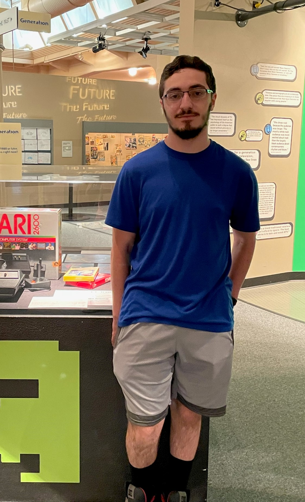

Edward Numrich's 235 Home Page

About me:
I've wanted to make games for a long time. When my parents told me that I can't be playing around all day,
I worked to find a loophole--making them myself! When it comes to games, I play a little bit of everything, but I prefer JRPGs the most.
I love the Xenoblade Games, Persona series, and The Legend of Heroes
series, just to name a few.
My goal for this class is to primarily learn about JavaScript, just because I've been interested in it since
I was forced to use code.org in elementary school. I'm here in GDD to, well, make games. I get to learn how to turn a creative vision into an
interactive experience for others, and part of why I'm here at RIT is to either get a job in the industry, or meet people I trust with whom I'd
like to eventually form an independent studio. By the time I graduate, I would hope to have already secured some job in the industry.
Projects:
Project 1
Project 2
Project 3